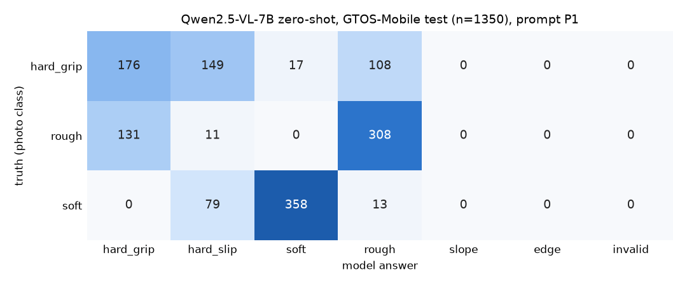

Can an open VLM name the floor from a real photo?
First a check on real ground: given one real photo of the ground and the project's six floor classes, does Qwen2.5-VL-7B pick the right class with no training at all?
In short
- Partly. Zero-shot, the model separates soft, rough and hard ground well above chance: macro-F1 0.678 ± 0.017 over three classes, where chance is about 0.33.
- It is not usable as a floor sensor as it is. Hard paving is its weak class: right on only 0.391 of those photos.
- Its most common error is the one that matters most. It answers "slippery" on 239 of 1,350 photos, and none of them are slippery. Dry concrete is called slippery.
- Half the task cannot be tested on these photos. There are no slippery floors, slopes or edges in the data.
What was done
- Model. Qwen2.5-VL-7B-Instruct (Apache-2.0), as it comes, in bf16 with greedy decoding.
- The task. The model gets one photo and must answer in JSON with one of six class names: hard_grip (grippy hard floor), hard_slip (slippery hard floor), soft, rough, slope or edge (planks and steps). An answer that is not valid JSON counts as wrong.
- Photos. Real outdoor ground photos, close up and looking down. Validation: 360 GTOS images, 120 per class. Test: 1,350 GTOS-Mobile phone-video frames, three disjoint subsamples of 450, 150 per class each. Validation and test come from different cameras and capture sessions.
- The wording of the question. Three wordings were tried on validation only. The best by macro-F1 (the shortest one, which gives no class definitions) was run once on test.
- Score. Macro-F1 over the three classes that have photos, mean ± sd over the three test subsamples. The model may still answer any of the six names; naming an untested class is an error.
Which photos count as which class
The photo set has 31 ground materials. They were mapped to the project's classes by material alone, from a contact sheet, before any model run.
| Project class | Materials from the photo set |
|---|---|
| hard_grip | asphalt, cement, brick, stone-asphalt, stone-brick, stone-cement |
| soft | grass, turf, moss, sand, soil, dry leaves, leaves, wood chips |
| rough | pebbles, shale, small limestone |
| hard_slip | none: no material is reliably slippery (no ice, wet or polished floor). Not tested. |
| slope | none: slope is geometry, not visible in close-up material photos. Not tested. |
| edge | none: geometry. Not tested. |
Reading the table. Only three of the six classes can be tested on real photos. Ambiguous materials were left out, among them painted asphalt, metals, plastics, glass, cloth, paper, roots and large limestone (flat slabs in one set, rock piles in the other).
Results
| Test, 1,350 photos | Value |
|---|---|
| Macro-F1 (3 classes) | 0.678 ± 0.017 |
| Accuracy | 0.624 ± 0.016 |
| Invalid answers | 0.000 ± 0.000 |
| Right on hard_grip photos | 0.391 ± 0.034 |
| Right on rough photos | 0.684 ± 0.014 |
| Right on soft photos | 0.796 ± 0.021 |
Reading the table. Well above chance (about 0.33), and the JSON format never failed. But even soft, the best class, is right on only 0.796 of its photos, and hard paving is wrong on most.

| Wording (validation, 360 photos) | Macro-F1 | Accuracy | Invalid |
|---|---|---|---|
| P1, shortest, no class definitions | 0.644 | 0.647 | 0.000 |
| P2 | 0.626 | 0.661 | 0.000 |
| P3 | 0.611 | 0.661 | 0.000 |
Reading the table. P1 was chosen on validation by macro-F1 and run once on test. The differences between wordings (0.611 to 0.644) are within noise.
Speed: 18.34 answers per second (batches of 16, 74 s for 1,350 photos) on an H100 that another job kept at about 90 % load, so it is a lower bound.
Where it fails
- Hard paving. Plain cement is called slippery in 58 of 75 photos, asphalt in 42 of 75.
- "Slippery" everywhere. The model answers hard_slip on 239 of 1,350 photos, and none of them are slippery.
- Rough. Mostly right, but shale and pebbles are taken for hard_grip in 109 of 300 photos.
- Soft. The best class. Grass, moss, dry leaves, turf and wood chips are right in 95 to 100 % of photos, but sand and green leaves are right in only 21 of 57 each; most of the rest are called slippery.
What it means. The error that matters most for walking, grippy against slippery, is the one the model gets wrong most often, and this data cannot test real slippery floors at all. That argues for tuning the model (the next page), and for real photos of slippery floors before any claim about slip.
Independent re-check
- Holds: macro-F1 0.678 ± 0.017, accuracy 0.624 ± 0.016, 0 invalid, per class 0.391 / 0.684 / 0.796, with the re-check's own answer parser. 239 of 1,350 answers are hard_slip. Validation and test share no file and no image bytes, and come from different sources.
- Holds with caveats: the wording was chosen on validation only (the log shows three validation runs, then one test run), but the differences between wordings are within noise. The overall verdict "partly" holds, but only 3 of 6 classes are tested, and the ± comes from subsamples that share source videos, so it understates the spread.
- Could not check: the mapping from photo materials to project classes, and the data licence.
- Re-run later: when the same model was run again on the same 1,350 photos for the tuning experiment, it scored 0.679 instead of 0.678: a few answers differ (hard_grip answers 310 against 307).
Full list: independent re-check of experiment 1.
Limits
- Three of six classes. No slippery, sloped or edge ground in the photos.
- Close-up material photos, not the view from a robot's torso camera.
- Few source videos. The test frames come from few videos per class, so the three subsamples share videos.
- Licence. The photo set's re-upload declares Apache-2.0, but the original authors' pages state no licence. The photos are treated as research-use only and are not shown or redistributed.
Scores: macro-F1 over the three classes that have real photos, mean ± sd over three test subsamples. Photos: GTOS and GTOS-Mobile (Xue, Zhang, Nishino, Dana, CVPR 2017; Xue, Zhang, Dana, CVPR 2018), numbers only. Model: Qwen2.5-VL-7B-Instruct, Apache-2.0. Related: the VLM tuned on the sole's labels, the vision head, the dataset, independent re-check.